Marvel Movies
The Infinity Saga spans MCU Phases One through Three, bringing together heroes and storylines that culminate in the battle against Thanos. All films listed here have been released.
The Infinity Saga spans MCU Phases One through Three, bringing together heroes and storylines that culminate in the battle against Thanos. All films listed here have been released.
Phase One introduces the heroes who will form the Avengers and sets the events of the MCU in motion. All Phase One films have been released.
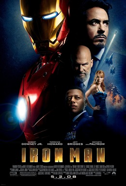
Released in 2008, this film follows inventor Tony Stark as he builds a powerful suit of armor and chooses to use his technology to protect people as Iron Man.
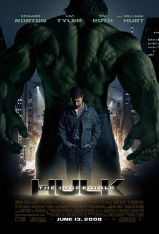
Released in 2008, scientist Bruce Banner searches for a cure to the transformation that turns him into the Hulk while evading the military and facing another gamma-powered threat.
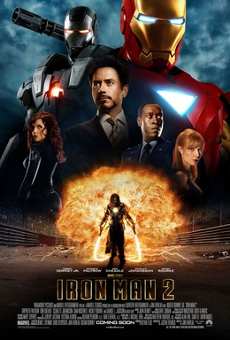
Released in 2010, Tony Stark faces pressure to share his Iron Man technology as a new enemy seeks revenge against the Stark family.
_poster.jpg)
Released in 2011, Thor is cast out of Asgard and learns humility on Earth as his brother Loki makes a bid for the throne.
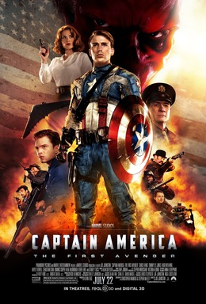
Released in 2011, Steve Rogers becomes Captain America during World War II and leads the fight against Red Skull and Hydra.
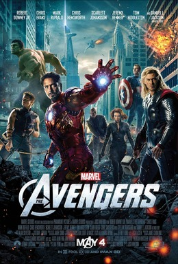
Released in 2012, Earth's mightiest heroes unite for the first time to stop Loki and his alien army from invading the planet.
Phase Two follows the Avengers after their first team-up and introduces new heroes and cosmic threats. All Phase Two films have been released.
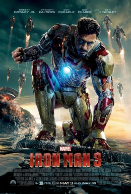
Released in 2013, Tony Stark confronts a dangerous new enemy while coping with the emotional fallout of the Battle of New York.
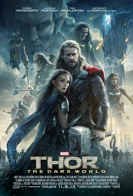
Released in 2013, Thor and Loki join forces to stop Malekith from using an ancient power to plunge the Nine Realms into darkness.
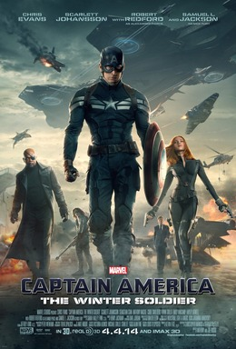
Released in 2014, Steve Rogers uncovers a conspiracy inside S.H.I.E.L.D. and faces a mysterious assassin known as the Winter Soldier.
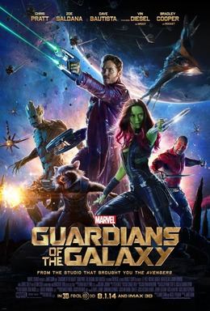
Released in 2014, Peter Quill and a band of spacefaring outcasts become unlikely allies as they try to keep a powerful artifact from Ronan.
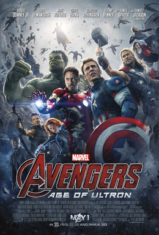
Released in 2015, the Avengers face Ultron, an artificial intelligence created by Tony Stark and Bruce Banner that threatens humanity.
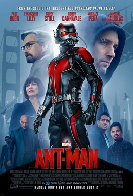
Released in 2015, former thief Scott Lang trains with Hank Pym to become Ant-Man and stop Darren Cross from weaponizing shrinking technology.
Phase Three brings the Infinity Saga to its conclusion, with heroes divided by conflict and later united against Thanos. All Phase Three films have been released.
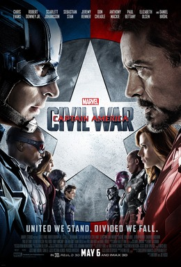
Released in 2016, disagreement over government oversight divides the Avengers and puts Steve Rogers and Tony Stark on opposing sides.
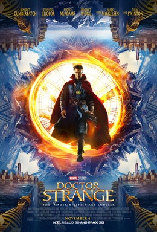
Released in 2016, surgeon Stephen Strange discovers the mystic arts after an accident ends his medical career and draws him into a battle against a supernatural threat.
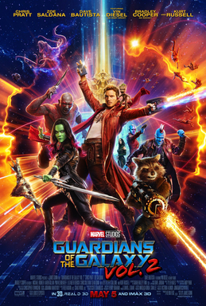
Released in 2017, the Guardians face a new threat as Peter Quill learns more about his origins and what family means to him.
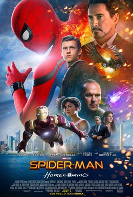
Released in 2017, Peter Parker balances high school with his responsibilities as Spider-Man while trying to stop the arms dealer known as the Vulture.
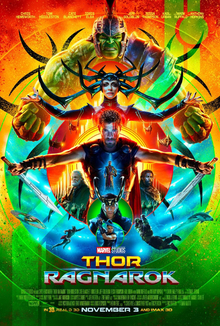
Released in 2017, Thor must escape Sakaar, reunite with his allies, and confront Hela before Asgard is destroyed.
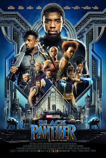
Released in 2018, newly crowned king T'Challa defends Wakanda and faces a challenge that forces him to reconsider the nation's place in the world.
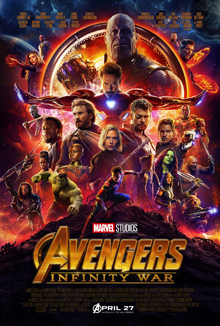
Released in 2018, heroes across the universe race to stop Thanos from collecting the Infinity Stones and reshaping life on a cosmic scale.
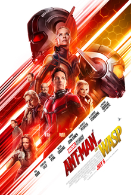
Released in 2018, Scott Lang and Hope van Dyne venture into the quantum realm to rescue Janet van Dyne while evading a new adversary.
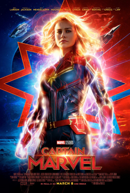
Released in 2019, Carol Danvers uncovers the truth about her past and her powers amid a conflict between the Kree and Skrulls.

Released in 2019, the surviving Avengers devise a risky plan to undo Thanos's devastating actions and restore those who were lost.
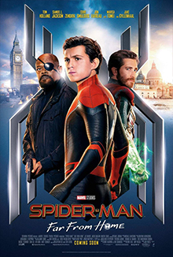
Released in 2019, Peter Parker's school trip to Europe turns into a mission to stop a new threat as he copes with the loss of his mentor.